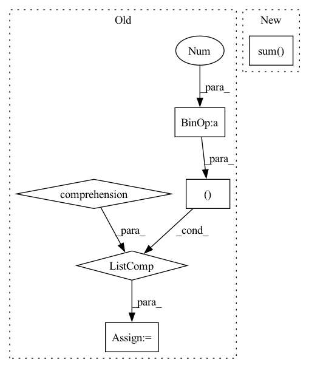

Pattern ID :12066
Before Change
phis_count = []
for i in range(preds.shape[0]):
// calculate phi angles
phis = [ get_dihedral_torch(c_terms[i,j-1], n_terms[i,j], c_alphas[i,j], c_terms[i,j]) \
for j in range(1, c_alphas.shape[-1]) ] // phi not allowed for first AA -> [1:]
phis_count.append( (np.array(phis)<0).sum() )
After Change
else:
c_terms = preds_[:, (torch.ones(*N_mask.shape)-N_mask-CA_mask).squeeze().bool() ]
// compute phis and count lower than 0s
phis_count = [ (get_dihedral_torch(c_terms[i,:-1], n_terms[i,:], c_alphas[i,:], c_terms[i,:])<0).sum() .item() \
for i in range(preds.shape[0])]
idx = np.argmax(phis_count)In pattern: SUPERPATTERN
Frequency: 3
Non-data size: 6
Instances Fragment ID: 40757628
Project Name: lucidrains/alphafold2
Commit Name: 45a1bffd138fc5bddf28c382a492c539f0a4bc0b
Time: 2021-02-07
Author: ericalcaide1@gmail.com
File Name: alphafold2_pytorch/utils.py
M Class Name: AnonimousClass
N Class Name: AnonimousClass
M Method Name: fix_mirrors_torch(6)
N Method Name: fix_mirrors_torch(6)
M Parent Class:
N Parent Class:
M File Name: alphafold2_pytorch/utils.py
N File Name: alphafold2_pytorch/utils.py
M Start Line: 431
M End Line: 447
N Start Line: 444
N End Line: 453
Before Change
durations = np.full(event_times_in_ms.shape, 4)
// Label information for this dataset
// have to add 1 as class labels start from 1, not 0 (due to matlab)
event_desc = dict([(i + 1, c) for i, c in enumerate(all_class_names)] )
descriptions = [event_desc[y] for y in event_classes]
annots = mne.Annotations(event_times_in_sec, durations, descriptions)
cnt.set_annotations(annots)After Change
// and seems then it is last of the class names
// ("Stimulation")
// at least in the file investigated
y[np.sum( y, axis=1) == 0, -1] = 1
assert np.all(np.sum(y, axis=1) == 1)
event_i_classes = np.argmax(y, axis=1)
Fragment ID: 40757624
Project Name: braindecode/braindecode
Commit Name: 6565c17f875088ed149dc8984b3a747ec1c2fb72
Time: 2021-08-12
Author: robintibor@gmail.com
File Name: braindecode/datasets/bbci.py
M Class Name: BBCIDataset
N Class Name: BBCIDataset
M Method Name: _add_markers(2)
N Method Name: _add_markers(2)
M Parent Class: object
N Parent Class: object
M File Name: braindecode/datasets/bbci.py
N File Name: braindecode/datasets/bbci.py
M Start Line: 218
M End Line: 222
N Start Line: 224
N End Line: 243
Before Change
phis_count = []
for i in range(preds_.shape[0]):
// calculate phi angles
phis = [ get_dihedral_numpy(c_terms[i,j-1], n_terms[i,j], c_alphas[i,j], c_terms[i,j]) \
for j in range(1, c_alphas.shape[1]) ] // phi not allowed for first AA -> [1:]
phis_count.append( (np.array(phis)<0).sum() )
After Change
else:
c_terms = preds_[:, (np.ones_like(N_mask)-N_mask-CA_mask).squeeze().astype(bool) ]
// compute number of phis lower than 0
phis_count = [ (get_dihedral_numpy(c_terms[i,:-1], n_terms[i,:], c_alphas[i,:], c_terms[i,:])<0).sum() \
for i in range(preds.shape[0])]
idx = np.argmax(phis_count) Fragment ID: 40757627
Project Name: lucidrains/alphafold2
Commit Name: 45a1bffd138fc5bddf28c382a492c539f0a4bc0b
Time: 2021-02-07
Author: ericalcaide1@gmail.com
File Name: alphafold2_pytorch/utils.py
M Class Name: AnonimousClass
N Class Name: AnonimousClass
M Method Name: fix_mirrors_numpy(6)
N Method Name: fix_mirrors_numpy(6)
M Parent Class:
N Parent Class:
M File Name: alphafold2_pytorch/utils.py
N File Name: alphafold2_pytorch/utils.py
M Start Line: 465
M End Line: 486
N Start Line: 474
N End Line: 489